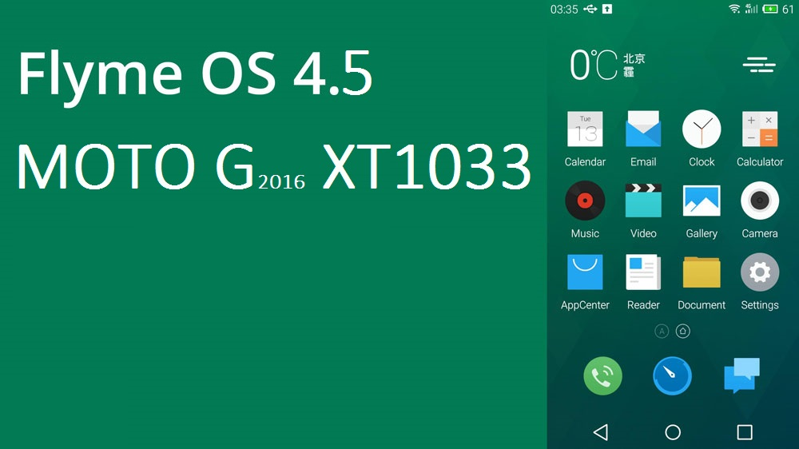

Flyme OS 4.5 para o MOTO G XT1033
Sem dúvidas o Flyme OS 4 é um dos sistemas operacionais mais belos no quisito usuabilidade e designer. Desenvolvido pela Empresa MAIZU para equipar seus dispositivos, agora conta com uma de suas versões disponivel para o aparelho MOTO G 2013, nisto iremos abordar a insalação desse sistema no mencionado dispositivo.
#REQUISITOS
-
Após ter baixado o arquivo da firmware, transfira para a memória interna do aparelho e o desligue.
Trasfira também o arquivo GAPPS.
Entre na recovery TWRP {ou a de seu uso} pressionando as teclas de VOL- e POWER por alguns segundos, quando então desça com atecla de VOL - ate _Recovery e comfirme com a tecla POWER.
Selecione WIPE, clique em ADVANCED WIPE, DATA_CACHE_DALVIK CACHE e Swipe to Wipe.
Agora que seu dispositivo está preparado para resceber um novo sistema, iremos instalar o arquivo da firmware que fora transferido a passos anteriores para a memória do aparelho.
Volte ao Menu Inicial e clique em INSTALL, feito isso selecione 'flyme__blackmax_4.5.4.3R.zip' e clique em Swipe to Install.
Clique GAPPS5111.zip e realize os mesmos passos anteriores: Selecione swipe to install.
Então se obteve problemas com alguns dos passos listados acima, fique tranquilo a deixar seus comentários logo abaixo.